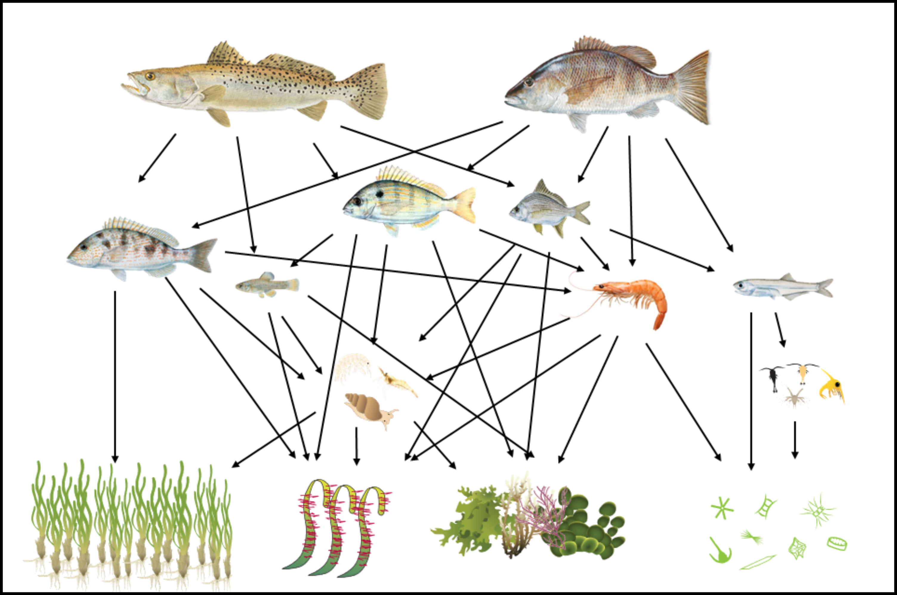
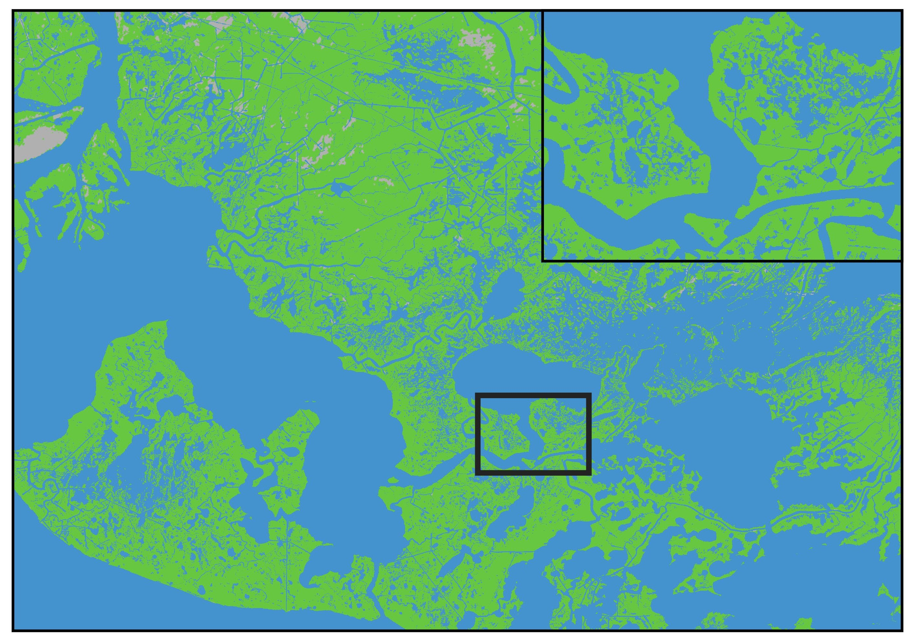
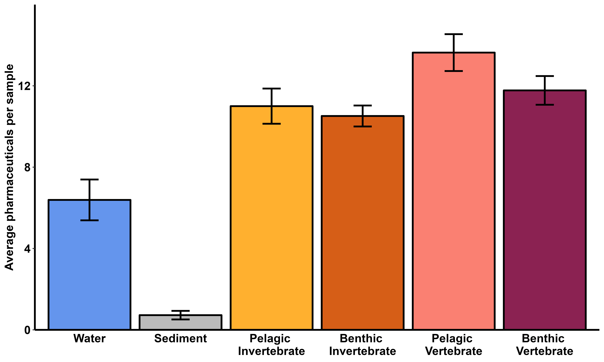

Research
E-scapes - Consumer specific mapping of energetic resources

Energy and habitat distribution are inherently linked. Energy is a major driver of the distribution of consumers, but estimating how much specific habitats contribute to the energetic needs of a consumer can be problematic. E-scapes, or energetic resource landscapes, are species-specific representations of the distribution of energetic resources. This technique combines where resources are being produced (habitat maps) with the resources that are being used by the consumer (stable isotope analysis). My research uses E-scapes alone and in combination with existing models to improve habitat management and restoration practices, test fundamental movement theory, predict species distributions, and quantify the change in habitat quality in relation to habitat change and disturbance.
Drivers of energy flow and trophic niche breadth

Food webs are an essential component of all ecosystems, and I am interested in understanding the drivers that affect the structure and function of food webs. My research tries to understand the abiotic and biotic factors that influence the resource use, trophic niche breadth, and overlap of food webs.
Effects of spatial variation on ecological processes

The spatial heterogeneity of the amount and configuration of habitats and environmental conditions can influence species presence, movement, and interactions. Natural and anthropogenic disturbances are leading to changes in the spatial configuration of habitats through landscape processes such as habitat loss and fragmentation. My research focuses on determining how landscape/seascape pattern and composition, as well as spatial variability in environmental conditions, affect species distribution and movement, and how these factors affect the structure and function of food webs.
Functional recovery of habitats after restoration

Restoration is becoming increasingly common as a way to return the functionality of degraded ecosystems. I am interested in developing tools to better assess the functional recovery of habitats after restoration, and to determine the factors that aid in restoration success.
Pharmaceutical distribution, pathways of exposure, and ecological impacts

Pharmaceuticals are a concerning threat to ecosystems, and the documentation of adverse sublethal effects has lead to the classification of pharmaceuticals as an emerging contaminant of concern. Pharmaceutical pollution in the environment results from a lack of removal by wastewater treatment. My research focuses on understanding the threat of pharmaceutical contaminants to ecosystems by distribution of pharmaceuticals, the pathways of exposure for organisms, and the ecological impacts on ecosystems of pharmaceuticals.